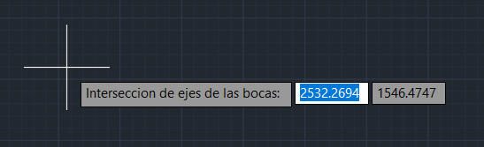

When I test an app, I like to follow an action beyond the screen where it starts. If I change an ingredient
on a pizza, does the price update in the cart? Does the same total make it to the order summary?
Questions like these help me decide what to test next.
Building Nomad Pizza gave me a chance to test an application I had designed myself. I wrote automated checks
for the menu, cart, and order summary, and ran the scenarios that create orders in a local Firebase emulator.
On Urban Scooter, I used an Android emulator and Postman to look at the same delivery workflow from
the courier’s side and from the API.
My background in industrial engineering and process auditing shows up in what I do after I find a problem.
I record where the behavior first went off track, what I expected to happen, and the steps someone else
can follow to see it for themselves.
328 documented checks
86 defect reports
QA Engineering certification · TripleTen
Lean Six Sigma Yellow Belt
English · B2
tech-stack.json
Tech Stack
projects/
Projects

CAD Automation
Generate 3D piping components in AutoCAD with CREARPIEZA.
Configure a 2-inch, Schedule 40, long-radius 90° elbow and review its label and layer.
Pick the connection centerline intersection to insert the solid. Press Enter to repeat.
I am seeking opportunities as a QA Engineer Jr in projects that combine software quality with
process optimization. I bring an industrial‑driven QA approach, practical automation with AI,
and a continuous improvement mindset.
CREARPIEZA is an AutoLISP command for configuring and placing 3D piping components in AutoCAD. The dialog previews the component label, block name, and layer before insertion.
Run in AutoCAD
Download this folder and keep the five .lsp files together.
In AutoCAD for Windows, run APPLOAD and load CrearPieza.lsp from a trusted location.
Run CREARPIEZA. If prompted for a dependency, select PiezaDatos.lsp in the same folder. The command loads the remaining modules and generates its dialog at runtime.
Example
Select an elbow for weldable black pipe with Schedule 40, a 90° angle, a long radius, and a nominal size of 2 inches.
Select the labeled-solid-in-block output and review the generated label, block name, and destination layer.
Click Crear and pick the intersection of the elbow’s connection centerlines in the drawing.
Press Enter to place another elbow with the same settings, or choose Salir.
The example creates simplified geometry without threads or bevels.
Files
CrearPieza.lsp provides the command and configuration dialog.
PiezaDatos.lsp handles component labels and stored data.
GalvanizadosCifunsa.lsp, PiezasTuboNegro.lsp, and AccesoriosTuberia.lsp provide the component catalogs and geometry used by the command.
UI automation for Nomad Pizza's public ordering journey. It uses Python, pytest, and Selenium, with the Page Object Model and parametrized test data to validate the menu, cart, and public order information.
This repository and the entire public-order-flow/ folder are dedicated to the public customer interface. Its tests open the customer menu at the site root (/) and cover the menu, cart, and public order information. They must never open /admin.html; Admin interface automation is maintained separately and is not included here for confidentiality. The application source code, credentials, .env files, and Firestore cleanup integrations are also excluded.
Scope
Menu: product visibility and names, quantity counters, order type, prices, and the Pizza Dog promotion.
Customizable pizzas: ingredient availability across selectors, ingredient combinations, and price calculations based on the selected ingredients.
Cart: quantities, line subtotals and order total; confirmation when decreasing a quantity from one to zero; product details; remove and back actions; and bank details when bank transfer is selected.
Public order information: order summary, order ID, customer, payment method, total, products, ticket/QR link, return-to-menu action, and bank transfer/WhatsApp details.
Menu and cart tests stop before submitting an order. The two order information tests create a test order to reach the summary, so they are restricted to the local Firebase Hosting Emulator (port 5000). Orders remain in the Firestore Emulator and are not deleted automatically. The new-order notification test is not included because it belongs to the admin experience.
Requirements
Python 3.10 or later.
Google Chrome.
An accessible URL for the public application. By default, the tests use Firebase Hosting Emulator at http://127.0.0.1:5000/.
For test_info.py, Firebase Auth and Firestore Emulator must also be running, in addition to Hosting Emulator.
For the local end-to-end order tests, configure NOMAD_PUBLIC_URL as the customer-facing root URL:
NOMAD_PUBLIC_URL=http://127.0.0.1:5000/
Do not set it to http://127.0.0.1:5000/admin.html or use NOMAD_ADMIN_URL in this project. The public browser fixture and order-information tests reject non-root paths so a misconfigured run cannot silently test the Admin interface.
The order information tests submit local test orders. Run them only while Firebase Emulators are running:
python -m pytest tests/test_info.py -v
Ingredient combinations are parametrized and may produce many test cases in a run.
Test Results and Defect Reports
The reports below document findings from earlier test executions. They are kept for traceability and do not necessarily represent current failures; rerun the related cases to confirm their status. The public reports include the observed behavior and test context without requiring access to Jira.
This repository contains structured QA test reports for the Urban Scooter application, covering web, mobile, and API validation.
The goal was to ensure data integrity, functional compliance, and error handling across different modules: order placement, courier mode, order status, and API requests.
Findings highlight both approved cases and failed scenarios with traceable bug reports.
📂 Repository Structure
/reports → Original PDF reports with detailed test cases
/docs → Markdown summaries of test results
/api-tests → API request validation reports
/mobile-tests → Android Studio test cases for courier mode
/web-tests → Field validation and order status checklists
📊 Key Reports & Findings
Order Screen Validation (Web)
Verified input fields for names, addresses, phone numbers, and comments.
Most cases passed, but some failed: e.g., surname length validation (TS10-1), invalid address handling (TS10-2), phone number length (TS10-3), and comment field restrictions (TS10-4, TS10-5).
Courier Mode (Mobile)
Android Studio tests validated push notifications, offline handling, and order acceptance.
Failures included alert notification (TS10-8) and navigation to "My Orders" tab (TS10-9). Offline scenarios were correctly handled.
Order Status Screen (Web)
Functional checklist confirmed correct state transitions (warehouse, courier on the way, delivery, completion).
Failures: access to status screen (TS10-6) and activation of the third state "Order delivered" (TS10-7).
API Requests Validation
Tested endpoints for courier creation, deletion, order tracking, and cancellation.
Failures included invalid login inputs (TS10-11–15), password validation (TS10-16–18), username validation (TS10-19–22), courier deletion errors (TS10-23–24), order count retrieval (TS10-25–27), and order cancellation conflicts (TS10-28–31).
🎯 Value of the Project
Demonstrates end-to-end QA coverage across web, mobile, and API layers.
Provides traceable bug reports linked to Atlassian for failed cases.
Highlights data validation, functional compliance, and error handling.
Serves as a portfolio example of systematic QA methodology.
Integrate API validation into CI/CD pipelines for continuous monitoring.